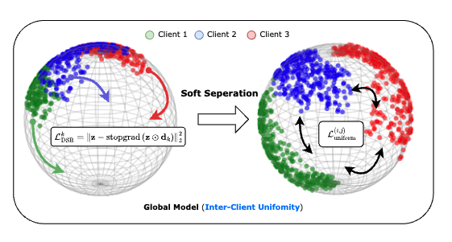

|
Hung-Chieh Fang I am a senior undergrad majoring in Computer Science at National Taiwan University, where I am fortunate to be advised by Professors Hsuan-Tien Lin, Yun-Nung (Vivian) Chen and Shao-Hua Sun. Currently, I am a visiting research intern at Stanford University, working with Prof. Dorsa Sadigh and Amber Xie. Previously, I was a visiting student at The Chinese University of Hong Kong, where I had the privilege of working with Dr. Yifei Zhang and Prof. Irwin King. |

|
ResearchI am broadly interested in robotics, machine learning and reinforcement learning. My research goal is to develope robots capable of performing complex tasks at or beyond human-level proficiency. I am particularly interested in the following areas:
|
|

|
Soft Separation and Distillation: Toward Global Uniformity in Federated Unsupervised Learning
International Conference on Computer Vision (ICCV), 2025
We explore how to improve representation quality (uniformity) under limited and restricted information due to the nature of federated learning (non-IID, features not shared across clients). We improve inter-client uniformity by softly separating client embeddings without disrupting the underlying data structure. |

|
Tackling Dimensional Collapse toward Comprehensive Universal Domain Adaptation
Hung-Chieh Fang, Po-Yi Lu, Hsuan-Tien Lin
International Conference on Machine Learning (ICML), 2025
We found that partial alignment loss fails to outperform the simplest baseline—training only on source data—when there is a source-target label imbalance, due to dimensional collapse in target representations. We address this using de-collapse techniques from self-supervised learning, advancing toward more comprehensive universal domain adaptation. |

|
Open-domain Conversational Question Answering with Historical Answers
Asian Chapter of the Association for Computational Linguistics (AACL), 2022
We propose combining the signal from historical answers with the noise-reduction ability of knowledge distillation to improve information retrieval and question answering. |
Projects |

|
Integrating Self-supervised Speech Model with Pseudo Word-level Targets from Visually-grounded Speech Model
Hung-Chieh Fang*, Nai-Xuan Ye*, Yi-Jen Shih, Puyuan Peng, Hsuan-Fu Wang, Layne Berry, Hung-yi Lee, David Harwath
ICASSP Workshop on Self-supervision in Audio, Speech and Beyond, 2024
We propose using vision as a surrogate for paired transcripts to enrich the semantic information in self-supervised speech models. |
|
|
Zero-shot Text Behavior Retrieval
Course Project of "Reinforcement Learning", Fall 2023
We propose a method for retrieving task-relevant data for imitation learning without requiring expert demonstrations. Our approach leverages text descriptions in combination with a vision-language model to enable zero-shot behavior retrieval. |
Teaching |
|
|
Teaching Assistant, EE5100: Introduction to Generative Artificial Intelligence, Spring 2024
Teaching Assistant, CSIE5043: Machine Learning, Spring 2023 |
|
This template is adapted from here. |